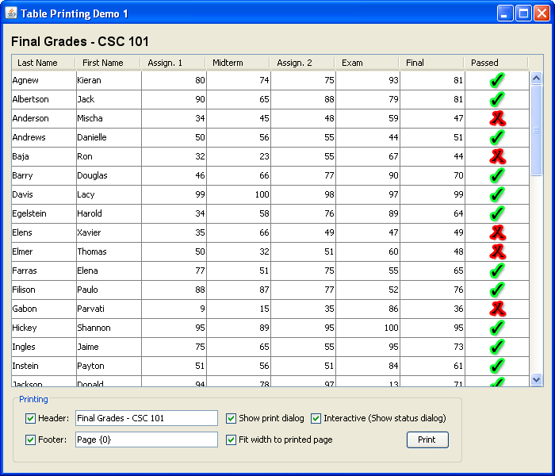
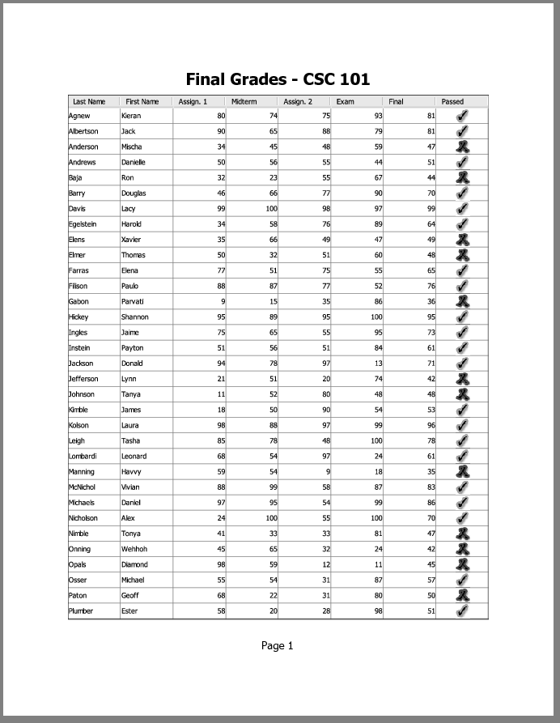
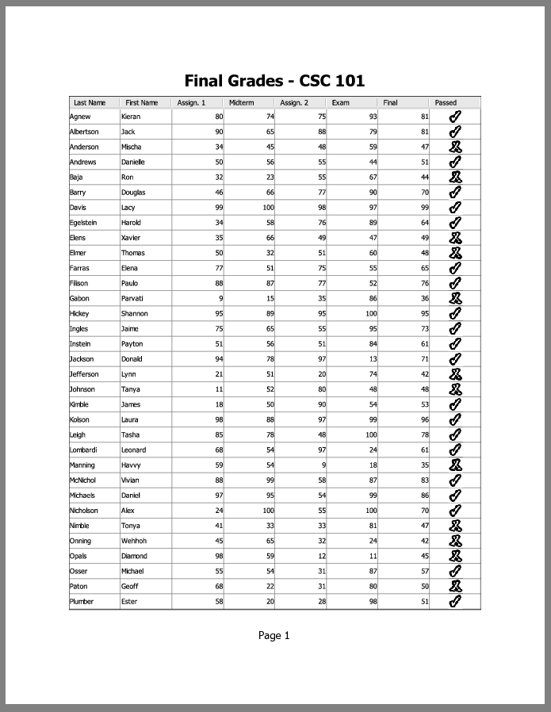
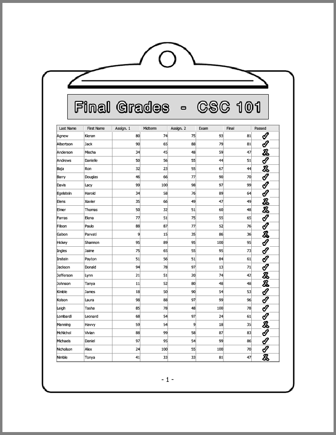
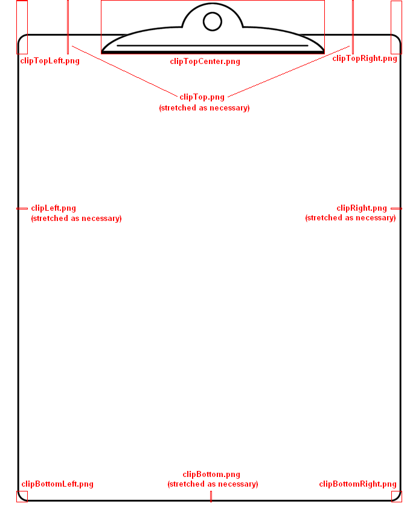

Lección: Usando Otras Características de Swing
Cómo Imprimir Tablas
La clase JTable suministra soporte para imprimir tablas. La IPA de impresión de
JTable incluye métodos que le permiten implementar tanto tareas básicas como avanzadas de
impresión. Para las tareas comunes de impresión, cuando necesita simplemente imprimir una tabla, use el método
print directamente. El método print tiene varias formas con varios conjuntos de
argumentos. Este método prepara su tabla, obtiene un objeto Printable, y lo envía a la impresora.
Si la implementación por defecto del objeto Printable no coincide con sus necesidades, puede
personalizar el diseño de impresión sobreescribiendo el método getPrintable para envolver el
Printable por defecto o incluso reemplazarlo por completo.
La forma más fácil de imprimir su tabla es llamar al método print sin parámetros. Vea el código de
ejemplo de abajo.
try {
boolean complete = table.print();
if (complete) {
/* muestra un mensaje de éxito */
...
} else {
/* muestra un mensaje que indica que se canceló la impresión */
...
}
} catch (PrinterException pe) {
/* Error de impresión, informa al usuario */
...
}
Cuando llama al método print sin parámetros, un diálogo de impresión se visualiza, y entonces su
tabla es impresa interactivamente en el modo FIT_WIDTH sin una cabecera o un pie. El ejemplo de
código de abajo muestra la firma del método print con el conjunto completo de argumentos.
boolean complete = table.print(JTable.PrintMode printMode,
MessageFormat headerFormat,
MessageFormat footerFormat,
boolean showPrintDialog,
PrintRequestAttributeSet attr,
boolean interactive,
PrintService service);
Cuando llama al método print con todos los argumentos, explícitamente elije las características de
impresión tales como un modo de impresión, un texto de cabecera y de pie, atributos de impresión, un servicio
de impresión de destino, y también si mostrar un diálogo de impresión o no, y si imprimir interactivamente o
no. Para decidir qué parámetros se ajustan mejor a sus necesidades, vea la descripción de las características
disponibles abajo.
La IPA de impresión de JTable ofrece las siguientes características:
- Imprimir Interactivamente o No-interactivamente
- Visualizar un Diálogo de Impresión
- Añadir una Cabecera o un Pie (o Ambos) al Diseño de Impresión
- Seleccionar un Modo de Impresión
- Diseño Automático y Paginación
Imprimir Interactivamente o No-interactivamente
En modoe interactivo un diálogo de progreso con una opción de abortar se muestra mientras dura la impresión. Aquí tiene un ejemplo del diálogo de progreso.

Este diálogo capacita al usuario realizar un seguimiento del progreso de la impresión. El diálogo de progreso
es modal, lo que significa que mientras es mostrado en pantalla, el usuario no puede interactuar con la tabla.
Es importante que su tabla permanezca sin cambios mientras está siendo impresa, de otra forma el comportamiento
de la impresión no estará definido. Sin embargo, la impresión interactiva no bloquea que otro código del
desarrollador de cambiar la tabla. Por ejemplo, hay otro hilo que publica actualizaciones usando el método
SwingUtilities.invokeLater. Por lo tanto, para garantizar un comportamiento de impresión correcto,
debe asegurarse de que su propio código se asbtenga de modificar la tabla durante la impresión.
Alternativamente, puede imprimir su tabla no interactivamente. En este modo, la impresión empieza inmediatamente en el hilo despachador de eventos y bloquea completamente cualesquiera eventos de ser procesados. Por otra parte, este modo mantiene segura la tabla contra cualquier cambio hasta que la impresión se haya hecho. Por otro lado, este modo priva por completo al usuario de cualquier interacción con la IGU. Es por eso que la impresión no interactiva solo puede recomendarse cuando se imprime desde aplicaciones con IGU no visible.
Diálogo de Impresión
Puede visualizar un diálogo de impresión estándar que permite al usuario hacer lo siguiente:
- Seleccionar una impresora
- Especificar el número de copias
- Cambiar los atributos de impresión
- Cancelar la impresión antes de que haya empezado
- Iniciar la impresión

Puede notar que el diálogo de impresión no especifica el número total de páginas en la impresión. Esto es
porque la implementación de impresión de la tabla usa la IPA Printable y el número total de
páginas no se conoce antes del tiempo de impresión.
Añadir una Cabecera o un Pie (o Ambos) al Diseño de Impresión
Las cabeceras y pies son proporcionados por los parámetros
MessageFormat. Estos parámetros permiten localizar la cabecera y al pie.
Lea la documentación para la clase
MessageFormat, como algunos caracteres, como comillas simples, son especiales y deben ser
evitados. Tanto las cabeceras como los pies se centran. Puede insertar un número de página usando {0}.
MessageFormat footer = new MessageFormat("Page - {0}");
Ya que el número total de páginas en la salida no es conocido antes del tiempo de impresión, no hay forma de especificar un formato numérico como "Página 1 de 5".
Modos de Impresión
Los modos de impresión son los responsables de escalar la salida y distribuirlo entre páginas. Puede imprimir su tabla en uno de los siguientes modos:
PrintMode.NORMALPrintMode.FIT_WIDTH
En el modo NORMAL una tabla se imprime con su tamaño actual. Si las columnas no caben en la
página, se extendrán a través de páginas adicioneales de acuerdo a la ComponentOrientation de la
tabla. En el modo FIT_WIDTH una tabla tiene un tamaño más pequeño, si es necesario, para encajar
todas las columnas en cada página. Note que tanto el ancho como el alto son escalados para proporcionar una
salida del mismo radio de aspecto. En ambos modos las filas se extienden a lo largo de páginas múltiples
secuencialmente con tantas filas por página como sea posible.
Diseño Automático y Paginación
Con el uso de la IPA de impresión de JTable no necesita cuidarse del diseño y la paginación. Sólo
necesita especificar los parámetros apropiados al método print tales como el modo de impresión y el
formato del texto del pie (si quiere insertar el número de página en el pie). Como se demostró anteriormente,
puede especificar el número de página en su pie incluyendo "{0}" en la cadena dada al
parámetro de pie MessageFormat. En la salida impresa, {0} será reemplazado por el número de la
página actual.
Ejemplos de Impresión de Tablas
Veamos un ejemplo llamado TablePrintDemo1. El código entero para este programa puede ser encontrado
en
TablePrintDemo1.java
. La rica IGU de esta demostración se crea automáticamente por el
constructor de IGUS del EID NetBeans
. Aquí tiene una foto de la aplicación TablePrintDemo1.

Pruebe esto:
-
Pulse el botón Lanzar para ejecutar TablePrintDemo1 usando
Java™ Web Start (
descargue KDJ 7 o posterior). Alternativamente, para compilar y ejecutar el ejemplo usted
mismo, consulte el índice de ejemplos.

- Cada casilla de verificación en la parte de atrás de la ventana de la aplicación tiene una tool tip. Mantegan el cursor sobre una casilla de vertificación para descubrir su proposito.
- Edite el texto en las casillas de verificación Cabecera o Pie o en ambas para proporcionar una cabecera o pie diferente.
- Limpie las casillas de verificación Cabecera y Pie o ambos para desactivar la cabecera o el pie.
- Limpie la casilla de verificación Mostrar diálogo de impresión para deshabilitar el diálogo de impresión.
-
Limpie la casilla de verificación Ajustar ancho a la página impresa para seleccoinar la impresión en
modo
NORMAL. - Limpie la casilla de verificación Interactivo (Muestra diálogo de estado) para deshabilitar el diálogo de impresión.
- Pulse el botón Imprimir para imprimir la tabla de acuerdo a las opciones seleccionadas.
Si una aplicación que se ha lanzado desde la web intentan imprimir, Java Web Start muestra un diálogo de seguridad pidiendo permiso al usuario para imprimir. Para proceder con la impresión, el usuario tiene que aceptar la petición.
Note que cuando limpia la casilla de verificación Interactivo, aparece un mensaje que avisa al usuario
sobre las desventajas de imprimir no interactivamente. Puede encontrar el código impreso en el método
PrintGradesTable. Cuando es llamado, este método primero obtiene ek conjunto de opciones
seleccionadas desde los componenes del IGU y entonces llama al método print como sigue.
boolean complete = gradesTable.print(mode, header, footer,
showPrintDialog, null,
interactive, null);
El valor devuelto por el método print es entonces usado para mostrar o el mensaje de éxito o
el mensaje que dice que el usuario canceló la impresión.
Otra característica importante es que la IPA de impresión de la tabla usa renderizadores de tabla. Al usar los renderizadores de tabla, la IPA suministra una salida impresa que parece como la tabla en la pantalla. Mira a la última columna de la tabla en la pantalla. Contiene imágenes personalizadas que indican el estado aprobado o no de cada estudiante. Ahora mire al resultado de la impresora. Puede ver que las casillas y las marcas X parecen iguales.
Aquí tiene una imagen del resultado impreso de TablePrintDemo1 en el modo FIT_WIDTH.

Esta figura ha sido reducida para caber en la página.
Pulse la imagen para verla en su tamaño natural.
Ejemplo TablePrintDemo2
El ejemplo TablePrintDemo2 está basado en la demo previa y tiene un interfaz idéntico. La
única diferencia en la salida impresa. Si mira al resultado impreso de TablePrintDemo1 más atentamente,
puede notar que el cheque y las marcas son borrosas. El ejemplo TablePrintDemo2 muestra cómo
personalizar la tabla para hacer las imágenes más distinguibles en la tabla impresa. En esta demos, el
método sobreescrito getTableCellRendererComponent encuentra si la tabla está siendo impresa
y devuelve imágenes en blanco y negro más nitidas. Si la tabla no está siendo impresa, devuelve imágenes
coloreas que puede ver en la pantalla.
Pulse el botón Lanzar para ejecutar TablePrintDemo2 usando Java™ Web Start (Descargue KDJ7 o posterior). Alternativamente, para compilar y ejecutar el ejemplo usted mismo, consulte el índice de ejemplos.
El método
isPaintingForPrint definido en la clase JComponent nos permite
personalizar lo que imprimimos comparado con lo que vemos en pantalla. El código de renderizador de
celda personalizado, tomado de
TablePrintDemo2.java, es listado abajo. Este código elije qué imágenes se usan
dependiendo del valor devuelto por el método isPaintingForPrint.
/**
* Un renderizador de celda personalizado que extiende el renderizador de TablePrinteDemo1, que en su lugar
* usa versiones más claras de blanco y negro de los iconos al imprimir.
*/
protected static class BWPassedColumnRenderer extends PassedColumnRenderer {
public Component getTableCellRendererComponent(JTable table,
Object value,
boolean isSelected,
boolean hasFocus,
int row,
int column) {
super.getTableCellRendererComponent(table, value, isSelected,
hasFocus, row, column);
/* si nosotros estamos actualmente imprimiendo, usamos los iconos en blanco y negro */
if (table.isPaintingForPrint()) {
boolean status = (Boolean)value;
setIcon(status ? passedIconBW : failedIconBW);
} /* de otra forma, se usan los iconos de la superclase (coloreados) */
return this;
}
}
Aquí tiene una imagen del resultado impreso de TablePrintDemo2 en el modo FIT_WIDTH.

Esta figura ha sido reducida para caber en la página.
Pulse la imagen para verla en su tamaño natural.
Ejemplo TablePrintDemo3
El ejemplo TablePrintDemo3 está basado en las dos demos previas. Este ejemplo muestra como
suministrar una implementación personalizada de Printable envolviendo el
Printable por defecto con decoración extra. Esta demo tiene un interfaz similar pero las
casillas de verificación de la Cabecera y el Pie están deshabilitadas ya que el objeto imprimible
personalizado suministrará su propia cabecera y pie.
Pulse el botón Lanzar para ejecutar TablePrintDemo3 usando Java™ Web Start (descargue KDJ 7 o posterior). Alternativamente, para compilar y ejecutar el ejemplo usted mismo, consulte el índice de ejemplos.
Este ejemplo imprime la tabla dentro de la imagen de un portapapeles. Aquí está la foto del resultado
impreso en el modo FIT_WIDTH.

Esta figura ha sido reducida para caber en la página.
Pulse la imagen para verla a su tamaño natural.
El código entero para este programa puede ser encontrado en
TablePrintDemo3.java
. En esta demo, una subclase personalizada de la clase JTable es usada llamada
FancyPrintingJTable. Esta clase FancyPrintingJTable sobreescribe el método
getPrintable para devolver un objeto imprimible personalizado que envuelve el imprimible por
defecto con sus propias decoraciones y cabecera y pie. Aquí tiene la implementación del método
getPrintable.
public Printable getPrintable(PrintMode printMode,
MessageFormat headerFormat,
MessageFormat footerFormat) {
MessageFormat pageNumber = new MessageFormat("- {0} -");
/* Obtener la imprimible predeterminada */
Printable delegate = super.getPrintable(printMode, null, pageNumber);
/* Devuelve un imprimible lujoso que envuelve el valor predeterminado */
return new FancyPrintable(delegate);
}
La clase FancyPrintable es responsable de envolver el objeto imprimible por defecto en otro
objeto imprimible y configurar la imagen del portapapeles. Cuando una instancia de esta clase es
instanciada, carga las imágenes necesitadas para ensamblar la imagen del portapapeles, calcula el área
requerida para la imagen del portapapeles, calcula el área reducida para la tabla, imprime la tabla dentro
de esta área más pequeña, y ensambla e imprime la imagen del portapapeles.
Preste atención a la flexibilidad del código que ensambla la imagen del portapapeles respecto al tamaño de la página. El código toma en cuenta las dimensioes de la página actual y coloca juntas las imágenes auxiliares, estirando algunas de ellas según sea necesario para que la imagen final del portapapeles se ajuste al tamaño real de la página. La imagen de abajo muestra las imágenes auxiliares e indica cómo estas imágenes forman la salida final.

Esta figura ha sido reducida para caber en la página.
Pulse en la imagen para verla a su tamaño natural.
La IPA de Impresión de Tablas
Esta sección lista los métodos definidos en la clase JTable que le permiten imprimir tablas.
| Método | Propósito |
|---|---|
|
boolean print()
boolean print(printMode) boolean print(printMode, MessageFormat, MessageFormat) boolean print(printMode, MessageFormat, MessageFormat, boolean, PrintRequestAttributeSet, boolean) boolean print(printMode, MessageFormat, MessageFormat, boolean, PrintRequestAttributeSet, boolean, PrintService) |
Cuando es llamado sin argumentos, muestra un diálogo de impresión, y entonces imprime esta tabla
interactivamente en el modo FIT_WIDTH sin un texto de cabecera o pie. Devuelve
true si el usuario continuó la impresión y false si el usuario canceló la
impresión.
Cuando es llamado con un conjunto completo de argumentos, imprime la tabla de acuerdo a los argumentos especificados. El primer argumento especifica el modo de impresión. Dos argumentos MessageFormat especifican el texto de la cabecera y el pie. El primer argumento
booleano define si mostrar un diálogo de impresión o no. Otro argumento booleano especifica si
imprimir interactivamente o no. Con los otros dos argumentos puede especificar atributos de
impresión y un servicio de impresión.
Siempre que se omita un argumento PrintService, la impresora por defecto será usada.
|
| Printable getPrintable(PrintMode, MessageFormat, MessageFormat) |
Devuelve un Printable para imprimir una tabla. Sobreescriba este método para obtener
un objeto Printable personalizado. Puede envolver un objeto Printable
dentro de otro para obtener varios diseños.
|
Ejemplos Que Usan Impresión de Tablas
Esta tabla lista ejemplos que usan la impresión de tablas y señala a dónde estos ejemplos son descritos.
| Ejemplo | Dónde Se Describe | Notas |
|---|---|---|
TablePrintDemo
|
Cómo Usar Tablas |
Demuestra las características básicas en la impresión de la tabla tales como visualizar un diálogo
de impresión, y entonces imprimir interactivamente en el modo FIT_WIDTH con un número
de página como cabecera.
|
TablePrintDemo1
|
Esta página | Demuestra los fundamentos de la impresión de tablas y suministra una IGU rica. Permite al usuario especificar un texto de cabecera y pie, seleccionar el modo de impresión, activar o desactivar el diálogo de impresión, y seleccionar la impresión interactiva o no interactiva. |
TablePrintDemo2
|
Esta página | Basada en TablePrintDemo1, este ejemplo tiene un interfaz idéntico. Esta demo muestra como personalizar la tabla de forma que el resultado impreso parezca diferente comparado a la tabla que es mostrada en pantalla. |
TablePrintDemo3
|
Esta página | Esta demo muestra características avanzadas de impresión de tablas tales como envolver el imprimible de tablas por defecto dentro de otro imprimible para obtener un diseño diferente. |